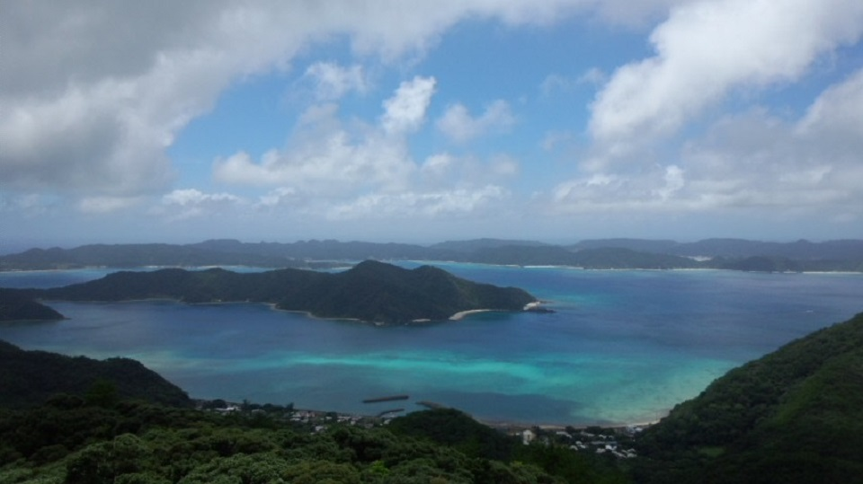
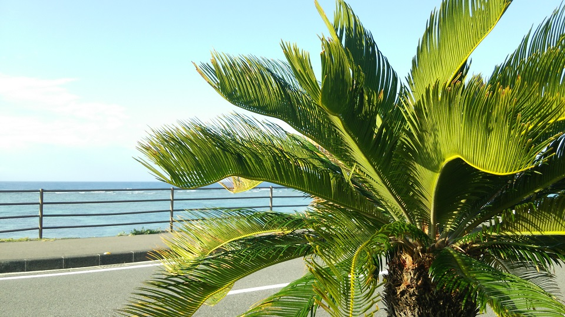

鹿児島と沖縄の中間ぐらいにある島。鹿児島県。2009年には皆既日食で話題に。

本島を除く島の中で、5番目に大きい。よく勘違いされるが1日では島1周はできないほど。
鹿児島と沖縄の中間ぐらいにある島。鹿児島県。2009年には皆既日食で話題に。
本島を除く島の中で、5番目に大きい。よく勘違いされるが1日では島1周はできないほど。
海はとても綺麗。写真は奄美大島北端の笠利。田中一村も描いたアダンが実っている。
珊瑚礁で遠浅の海が広がる。安木屋場(あんきゃば)の海。星の砂が取れる。
ゴジラの撮影現場にもなった金作原(きんさくばる)には熱帯植物が多い。島の大半を山が占めるのでどんどんトンネルが増えていく。
秋名集落から見た山。山に白い雲がかかったらすぐに雨が降り出す。
写真は天然記念物のアマミノクロウサギ。他にもアカショウビンやイシカワガエルといった、特有の動物が生息している。
山道には注意書きが多く見れる。
実バショウ(島バナナ)。島では一家に一本と言っていいほど庭に生えている。
南国といえばハイビスカス。赤色が一番多く見かける。
着物で有名な大島紬。隣の家から機を織る音が聞こえる。
秋名集落は島の中で稲作をしている数少ない集落。稲の香りがする。
様々な伝統行事があるが、写真は秋名集落のショチョガマを行う場から秋名を見渡したもの。日の出と秋名を一望できる。